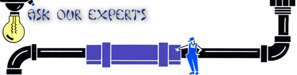
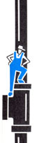

If you'd like our panel of consultants to answer a question concerning some aspect of self-reliant living that has you stumped, send it to Ask Our Experts, MOTHER EAR TH NEWS, P. 0. Box 70, Hendersonville, NC 29793. The most frequently asked questions wall be answered here-and here only-so that we can all benefit from what these folks have to say.
The water pipes in my crawl space freeze every winter. Are there any really effective steps I can take to keep this from happening?
Most houses with crawl spaces are located in the Southeast and Far West, regions with lower than average heating requirements and somewhat higher humidity levels. With a few exceptions, less than 20% of the houses in the rest of the country use such perimeter foundations. Because a crawl space is somewhat exposed to the environment, even brief cold spells can freeze water in the plumbing beneath the house.
The simplest solutions-allowing the faucets to trickle constantly, or wrapping the pipe runs with electrical-resistance heat tape-are also the most wasteful and not always 100% effective. A better remedy would be to insulate the plumbing with foam wrap made for this purpose, and close the perimeter vents during the coldest months. In higher-humidity areas, however, this might encourage floor-joist and structural decay, especially if the wood moisture content exceeds 28%.
Since water tends to freeze at the points of maximum restriction, a low-wattage light bulb placed near a chronic tight spot (an elbow or reducer, for example) might solve the problem. Also, if you're replumbing, consider routing the runs alongside heating ducts where possible-and keep in mind that plastic pipe is a better insulator than conductive copper.
Probably the best permanent fix is to apply extruded polystyrene insulation board to the perimeter wall with construction adhesive. (If it's placed outside, protect it with a parge coat or some other material.) It should set you back about half the cost of floor insulation and will protect both the crawl space and the living space above it. If under-house moisture is a concern, consider laying sheets of 6-mil polyethylene over the earth in the crawl space and holding the plastic down at the edges with bricks or cap blocks.
-Dennis Burkholder
Dennis Burkholder is one of MOTHER's research staffers.
Old Smelly Potbelly
I recently bought an old Union No. 28 cast-iron potbelly stove at a sale. Two problems have slowed my attempts to restore it.
The first is smoke. I took the stove apart to clean it, and smoke now leaks out between the joints of the three body sections. There obviously used to be gaskets between the sections, but the common rope-style gaskets won't work because there's no groove in the cast iron.
My second problem is air intake. The damper consists of two panels that slide from side to side in a frame. I understand how it works, but there's a 1/4" space all the way across the top of the doors. This gap allows air to enter even when the panels are closed all the way. Also, there's a 1 "-high, 3"-wide opening on the side of the stove at its base. The leakage through these two gaps makes it hard to slow the combustion rate for an extended burn.
The stove appears to be original-without cracks, cuts, or adaptations. I've called several stove companies, but haven't gotten any help. Is the Union Stove Company even still around?
Indeed, the Union Manufacturing Co. (PO Box 522, Boyertown, PA 19512, 215/367-5360) is still in business, though Model No. 28 has long since been discontinued. The friendly people there offered to look around for leftover parts if you'll call and let them know exactly what you want. Meanwhile, there are some other steps you can take.
If much smoke is spilling from the gaps between the stove body sections, investigate your chimney. Chimney draft should be sufficient to pull air into the stove through the gaps; smoke should not escape. Once the chimney is working, then worry about the leaks.
Gasket now comes in a wide range of sizes and shapes. Flat gasket (about 1/8" thick and 1/4" to 1/2" wide) is widely used on modern woodstove doors. This may solve the problem of the leaky sections. A woodstove dealer should be able to get some from Rutland Products, Meeco Red Devil, or other distributors. You could also use furnace cement to seal the sections.
The folks at Union Manufacturing told me that No. 28 was mostly a coalburning stove, which explains the gaps at the top of the damper slides and the 1" X 3" opening. Coal heaters require more and different air sources from wood burners.
I've watched several people try to coax old potbellies into giving all-night burns on wood. Their successes have been marginal at best. Those who've thought of their old potbellies as antiques have been happy; those who've tried to use them as dependable heaters have soon gone shopping for newer, more efficient units.
-David Schoonmaker
David Schoonmaker is a technical editor for MOTHER.
I have a problem with condensation from my toilet tank. We want to put an oak floor in the bathroom, but we're afraid the water will ruin it in no time. Meanwhile, we keep a long pan on the floor to catch the drippings. Any suggestions?
First, make certain the moisture isn't coming from a hairline crack in the tank-or from a damaged ballcock valve or seat, which could spray water onto the lid and down the outside of the tank.
If you've determined that the tank is indeed sweating, try lowering the temperature of the bathroom and the surrounding area and reducing the humidity of the room with a dehumidifier or a ventilating fan. In addition, you could install a plastic tank liner to insulate the tank walls from the cold water.
-Richard Freudenberger
Richard Freudenberger is MOTHER's research coordinator.
|
 |
 |
|